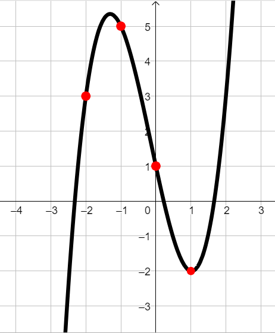

e svolgere gli esercizi a risposta multipla relativi
Esercizio 1
Riprendiamo l'esempio della funzione "Livello della batteria" visto in classe.
Rispondere alle seguenti domande.
Qual è il livello di batteria raggiunto dopo 3 ore ed un quarto?
Dopo quanto tempo il dispositivo raggiunge il livello \(l = 77\)?
Qual è il tempo di durata della batteria?
Mettendo in carica il cellulare da spento, la carica aumenta del \(20\%\) ogni ora.
Se invece il dispositivo è acceso, si sommano gli effetti della carica fornita dal caricabatterie e del consumo dovuto
all'utilizzo.
Modificare la funzione in maniera che descriva il livello di batteria di un cellulare acceso ed in carica.
Esercizio 2
Determinare se il grafico

può essere la rappresentazione della funzione
\[
p:\quad y = x^3 -5x +1
\]
Per farlo analizzate i punti del grafico evidenziati in rosso.